AI Minecraft Architect + Semantic Critic + Semantic Repair Loop
Closed-loop architectural synthesis: declarative semantic specifications, compiled through frozen procedural grammar, evaluated by an automated semantic critic, and repaired without raw coordinate leaks.
cd759b96...). No unverified LLM claims made.Initial unpartitioned layout. Monolithic massing, uniform procedural window spacing, open cavity interior, missing anvil & blacksmith equipment.
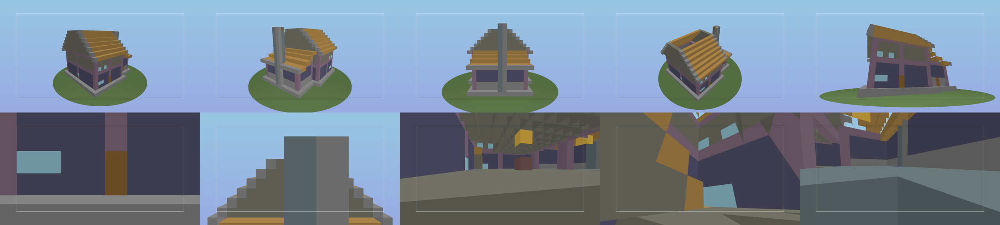
Enriched semantic architecture. Asymmetrical workshop annex, functional room partitions, grand porch canopy, complete blacksmith equipment cluster.
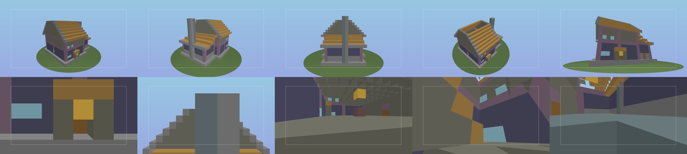
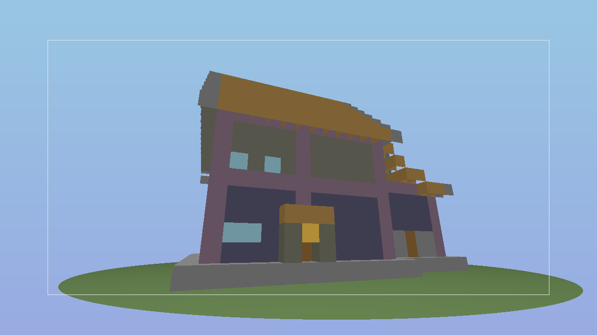
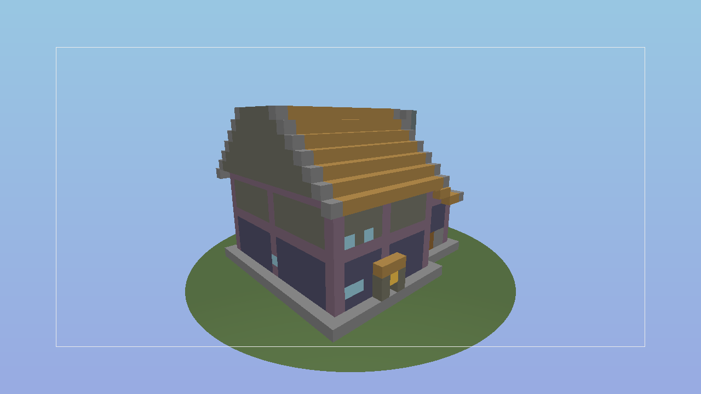
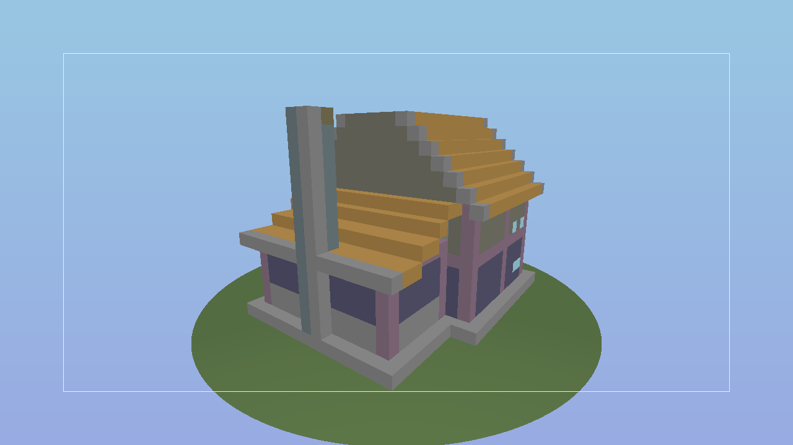
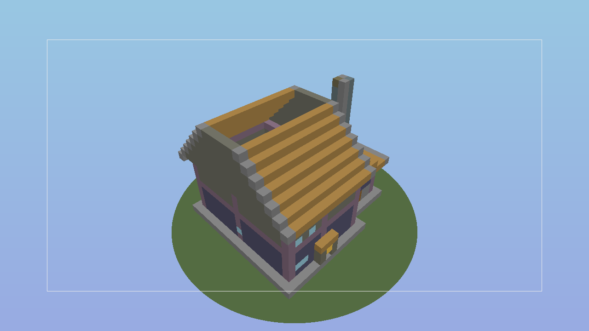
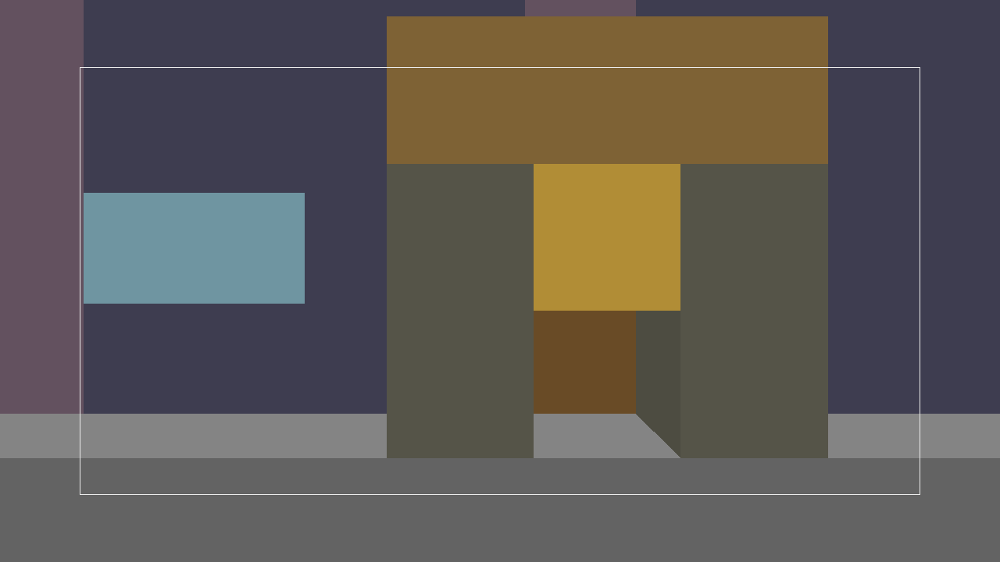
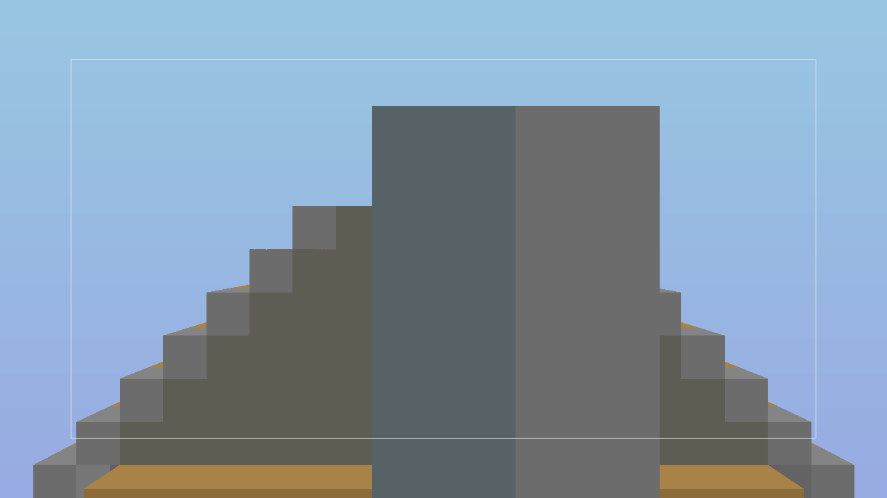
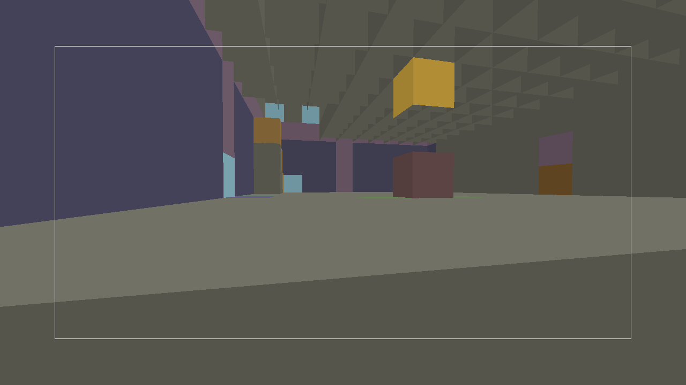
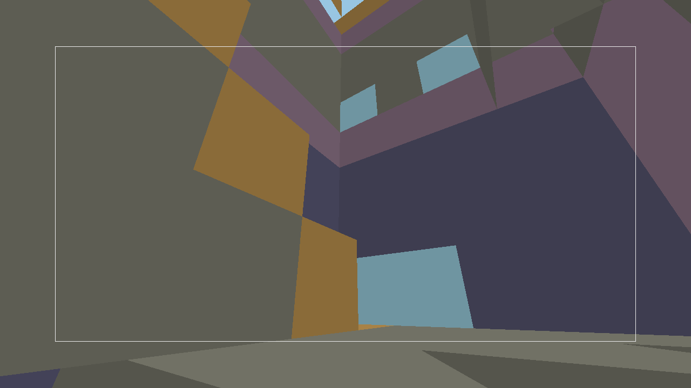
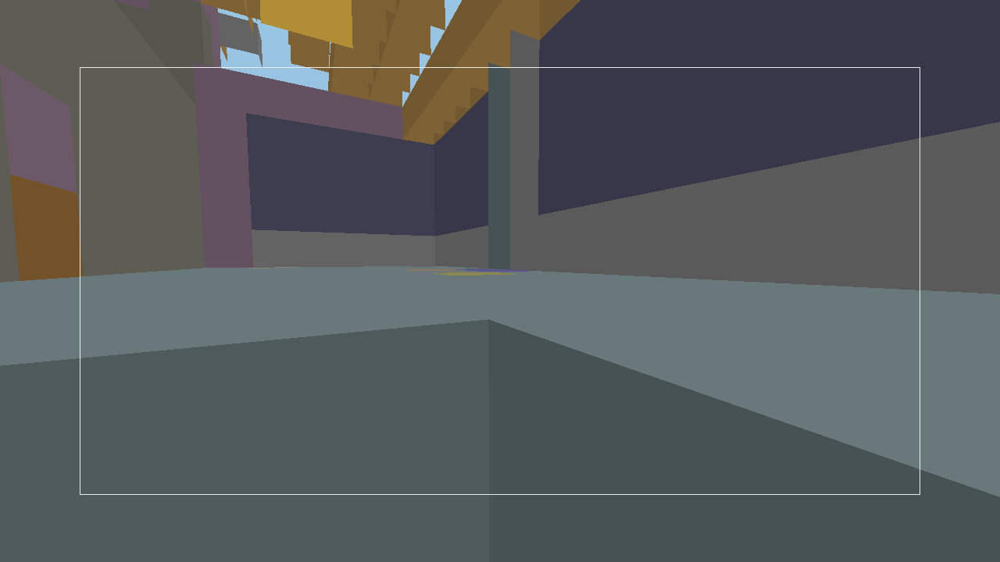
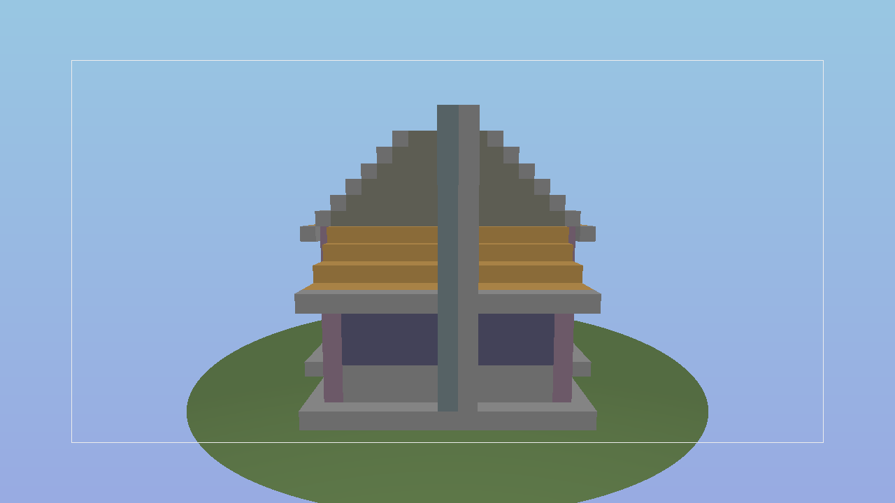
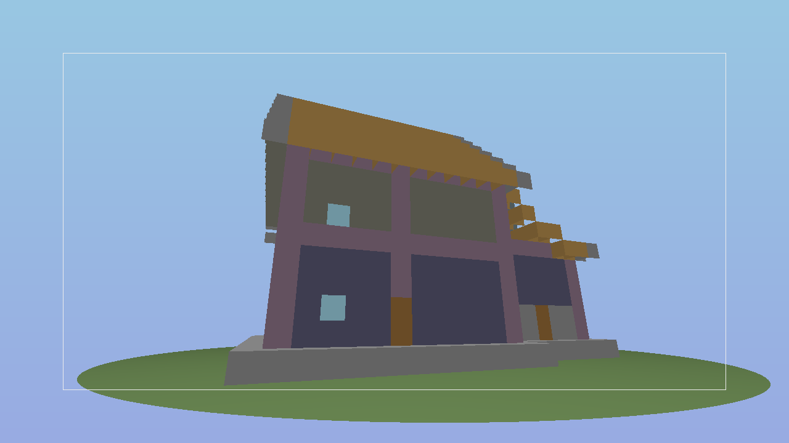
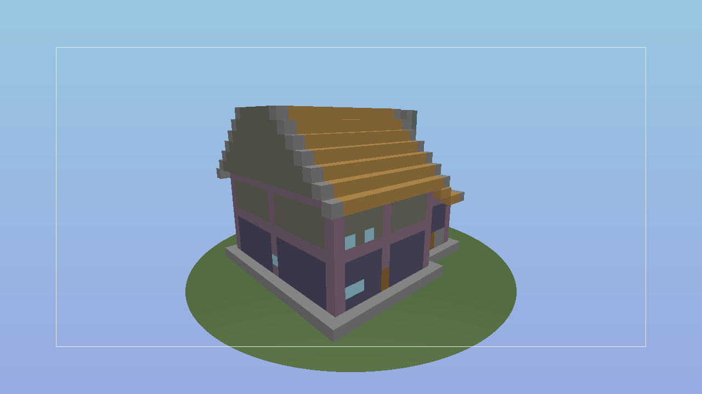
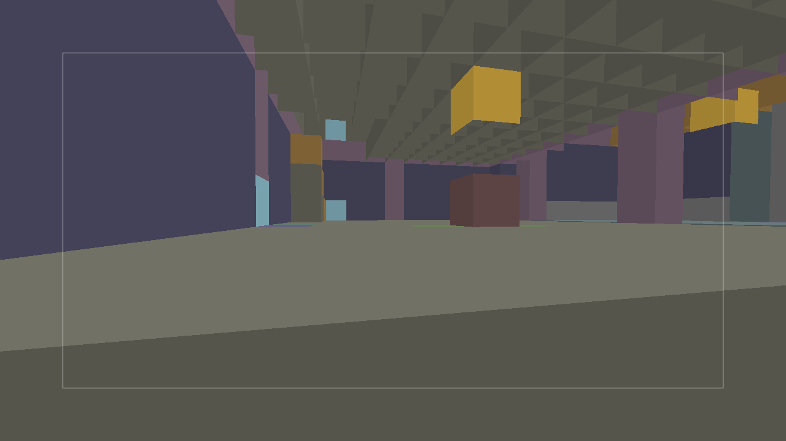
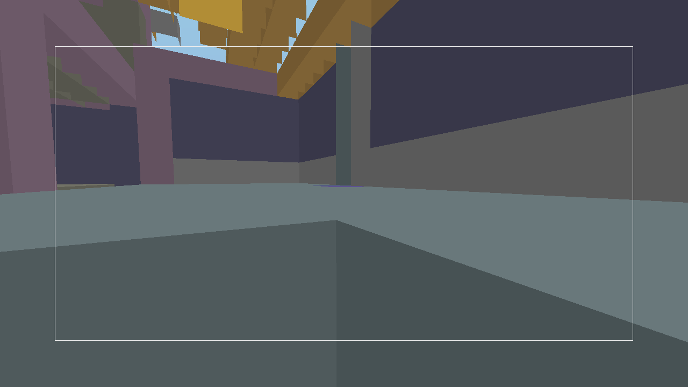
Semantic Critic Feedback & Repair Instructions (Iteration 0)
Semantic Diff Applied (Iteration 0 → Final)
Semantic architecture refined across 5 additions and 1 modifications: functional room zoning with storage pantry, full blacksmith workshop equipment cluster, grand entrance hierarchy, and paired window bays with forge ventilation slits.
Added Features
- Structural interior room partitions separating workshop from residential living quarters
- Functional room zoning (workshop, storage_pantry, living_hall, master_bedroom)
- Dedicated storage pantry annex with barrels, chests, and wall shelving
- Full blacksmith equipment cluster (blast furnace, anvil, grindstone, water cauldron, smithing table)
- Grand timber-framed porch canopy on south entrance establishing clear visual hierarchy
Modified Features
- Facade hierarchy: paired residential window bays ('paired-bays') and utilitarian forge ventilation slits ('forge-slits')
Critic Provenance & Asset Hashes
| Field | Value |
|---|---|
| Critic Provider | deterministic-semantic-critic |
| Critic Classification | SEMANTIC ONLY |
| Model / Provider Type | Deterministic Rule-Based Semantic Evaluator (evaluates ArchitectureSpec fields and structural constraints; no computer vision / pixel inspection) |
| Images Available | 11 rendered angles |
| Images Consumed (Pixels) | 0 (Evaluates semantic spec & structural constraints only) |
| ArchitectureSpec Hash (Final) | fe1f593423c788d8d61a339c3fba8176641e257030ade31a185fea51c85dc96d |
| Critique Output Hash (Final) | 30ea3fdbf0c51e02e0e6cd9499e27ca4b3d47aac089aad8441f066c9ee77e123 |
| Timestamp | 2026-09-06T08:04:54.046Z |
Exact Image SHA256 Hashes
| Asset | SHA256 Hash |
|---|---|
contact_sheet.png | 88474f07d6872dd64e04c827caa7d22af462ce5cdc0de1c2b1672a2f4bbb76b4 |
hero_shot.png | f6d98b2ced5b9939e7e971dbcd9b70b10f8ad434dab4332e60fe7f9cbfb27a49 |
front_three_quarter.png | 602d81c45ceb6ec5d159c08691810b7129b4eaec5078a92a426422699e2e4daa |
opposite_three_quarter.png | 8d9a78920edcfc8f5a8222d3b2080f8033a27afe883baddcbc17aab0bfcc1156 |
side_elevation.png | 0c1af24e47aa2b72226d5c2a2635384b1a868796364128e2b4b327614eb32a86 |
elevated_isometric.png | 6b76cff040a3547d1a3a9992f5f10fe38432a09a4ca5b87063841698e335e927 |
entrance_facade_detail.png | be717af73a4039db994b1ca256e9346db75d5feb9892cb0acb5acd82eea6c3c8 |
roof_chimney_detail.png | 9920f9a036af5a01458ae2b3c96e769217346a18d96d6ecb6223ca33a10e044c |
interior_living_hall.png | 6c7ccf169758da3b814bb620c525a570420756e7df45577bc969d003403c4eeb |
interior_circulation.png | b8b15148e68980271523c6f47eee970b61f11b21e570a9bf2e56d3d5c0b46b61 |
interior_workshop_forge.png | e38188db2030187a1c23bae675b0cf3d13f76f00e9b133faaaec3a6f613bbe2b |
Real Minecraft Fabric 1.21.11 World Readback
Physical build realized sequentially via performative /setblock strict commands on a live Fabric 1.21.11 server. Exact AABB scan read back using voxel state comparison.
| Metric | Value | Status |
|---|---|---|
| Structure ID | ai-proposal-house-seed501-iter1 |
VERIFIED |
| World Origin Coordinates | (450, -60, 200) |
ISOLATED ORIGIN |
| Expected Non-Air Blocks | 1,810 | VERIFIED |
| Correct Placed Blocks | 1,810 | 100.000% MATCH |
| Missing Blocks | 0 | 0 MISSING |
| Incorrect Block States | 0 | 0 INCORRECT |
| Extra / Floating Blocks | 0 | 0 EXTRA |
| Spec Hash | fe1f593423c788d8d61a339c3fba8176641e257030ade31a185fea51c85dc96d |
VERIFIED |
| Block Plan Hash | b7eeac05c7575759bfe6b2ff23243bf1a32c8a6ba37f6d1f99ba602bef3368d9 |
VERIFIED |
| Blueprint Hash | 44136fa355b3678a1146ad16f7e8649e94fb4fc21fe77e8310c060f61caaff8a |
VERIFIED |
| Verified Flag | true |
PASS |
Frozen Gate 8.7B Architectural Quality Heuristics (Final Output)
| Heuristic ID | Status | Result Detail |
|---|---|---|
NO_DUPLICATE_COORDINATES | PASS | Found 0 duplicate coordinate collisions (target: 0) |
SILHOUETTE_VARIATION | PASS | Silhouette variation ratio: 8.83 (area: 2.71, mass: 8.83) |
FACADE_DEPTH_RELIEF | PASS | Facade depth relief: 1 blocks with structural/trim articulation |
WINDOW_SPACING_SANITY | PASS | Windows placed within wall bounds without coordinate collisions |
ENTRANCE_ACCESSIBLE | PASS | Main entrance door detected at base level |
ROOF_COVERAGE | PASS | Top volume completely covered by roof, parapet, or deck (100%) |
STRUCTURAL_SUPPORT | PASS | Structural support ratio: 99.89% |
INTERIOR_CONNECTIVITY | PASS | Circulation connects vertical platforms (VERIFIED) |
NO_FLOATING_COMPONENTS | PASS | Floating disconnected components: 0 |
PALETTE_COHERENCE | PASS | Palette roles properly assigned (28 unique materials in histogram) |
VERTICAL_PROPORTION | PASS | Proportions valid for house (dims: 21x16x19) |
16 Acceptance Checks Audit Table
| Check ID | Status | Verification Detail |
|---|---|---|
architect_request_schema_validation | PASS | ArchitectRequest valid: prompt length=274 chars, family=house, style=rustic-medieval, seed=501 |
architect_provider_interface | PASS | Provider conforms to interface: id=deterministic-fixture-provider, name='Deterministic Architecture Synthesizer v1.0', isAvailable=true |
deterministic_fixture_provider | PASS | AI Architect framework validated using deterministic fixture provider. 10x determinism verified: specHash=cd759b963e774da9... invariant across 10 trials |
valid_ai_generated_architecture_spec | PASS | valid ArchitectureSpec v1.1.0 generated: family=house, dimensions=21x16x19, hasForge=true |
invalid_spec_feedback_repair | PASS | Schema guard properly caught malformed spec with 2 structured errors for automated feedback correction |
frozen_grammar_compatibility | PASS | Successfully compiled ArchitectureSpec through frozen Gate 8.7B grammar: 1752 blocks, grammar score 100% |
frozen_compiler_compatibility | PASS | Compiled to 1752 blocks via frozen Gate 8.7A compiler (target 1,500-3,000 blocks) |
multi_angle_visual_proof_generated | PASS | All 10 multi-angle shots + contact sheets generated for both Iteration 0 and Final (output/qa/ai-architect/loop/iteration-1) |
vision_critic_structured_output | PASS | Semantic Critic emitted structured critique with full provenance (type: SEMANTIC ONLY, 0 pixels consumed, screenshot hashes recorded, score=60/100, pass=false, issues=4) |
semantic_repair_instructions_only | PASS | Zero block-coordinate leaks detected: all repair instructions are high-level semantic directives |
max_iteration_protection | PASS | Loop converged safely in 2 iterations (max threshold: 3) |
before_after_semantic_diff | PASS | Semantic diff verified: storage pantry added, explicit paired-bays & forge-slits facade modified (5 additions, 1 modifications) |
demonstrated_quality_improvement | PASS | Quality score improved from 60% to 100% (+40 points), resolving 4 issues |
final_grammar_quality_heuristics | PASS | Frozen Gate 8.7B quality heuristics PASS on final spec (score: 100%, 0 duplicate coords, structural support PASS, circulation PASS, palette PASS, roof coverage PASS) |
real_minecraft_exact_readback | PASS | 100.000% exact readback: expected=1810 correct=1810 missing=0 incorrect=0 extra=0 at origin (450,-60,200) |
frozen_regressions_intact | PASS | Frozen Gate 8.7A compiler (factory-report.json), Gate 8.7B grammar (gate_8.7b_report.json), and dynamic camera hashes (LiveReplay=4a9c4df6c05a6974... DryRun=c32d95c1cf8104df...) verified intact |